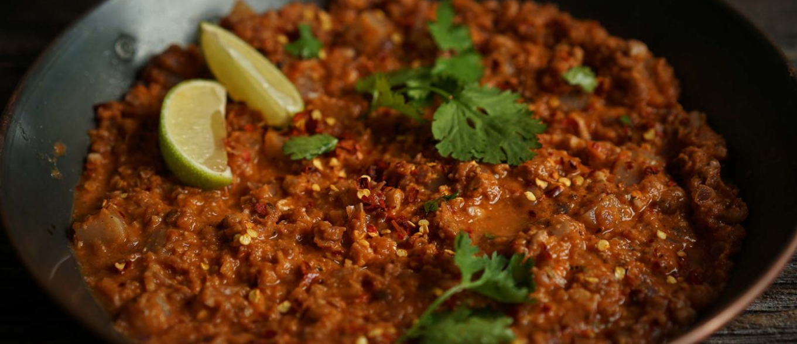

Keema Madras

Description
A plant-based take on a traditional Southern Indian curry made with red lentils and a combination of spices to add a rich and complex flavor. Serve with flatbread or rice.
Ingredients
- 1/3 cup (75g) red lentils (masoor dal)
- 3/4 cup (157.5 g) cubed potatoes , small cubes
Spices
- 1/2 teaspoon pepper corns or freshly ground pepper (use 1 tsp for the real deal!)
- 1/2 teaspoon cinnamon or 1 inch cinnamon stick
- 3/4 - 1 teaspoon fennel seeds
- 1 teaspoon coriander powder
- 1/2 teaspoon ground cumin
- 1/2 teaspoon poppy seeds
- 1 teaspoon raw rice (optional), or use rice flour
- 1/2 teaspoon sage
Sauce
- Spray oil (for coating your cooking pan)
- 13 cloves of garlic, finely chopped
- 1/2 cup (80 g) finely chopped onion
- 2 medium tomatoes , or 11 oz diced
- 2 tbsp shredded coconut
- 1/3 cup (39 g) coarsely crushed walnuts
- 1/3 cup (42.67 g) shredded carrots ,optional
- 3/4 tsp salt
- Cilantro, pepper flakes, lime juice for garnish
Steps
- Lentils + Potatoes: Add red lentils, potatoes, and 2 cups water in a saucepan. Cook uncovered over medium heat until potatoes are tender. 13-14 mins. Add in a good pinch of salt mid way. Do not drain.
- Spices: Grind the the spices in a grinder or blender if using whole spices (no need to do this if using ground versions). Lightly spray a skillet with oil to coat the surface and heat over a medium heat. Add the spices and toast for 2-3 mins. If the pan is heating too quickly, roast at medium-low heat.
- Add garlic and cook for a few seconds. (You can also add 6 curry leaves at this point if you have some). Add onion and good pinch of salt and cook until translucent, stirring occasionally. Meanwhile, blend the tomatoes with coconut and a few tbsp of water until smooth.
- Add the blended tomato coconut mixture and cook over medium until it thickens and oil starts to leave the mixture. 5 to 7 mins. Add the carrots and walnuts and cook for 2 mins.
- Add the cooked lentils and potatoes with the cooking water(it should be about a half cup or so liquid after evaporation during cooking in step 1). Add salt and mix well to combine the spiced mixture and lentils.
- Reduce heat to medium-low, cover and cook for 5 to 7 mins. Taste and adjust salt and flavor.
- Add a dash of lime juice, generous pepper flakes or cayenne, and cilantro and serve with rice, flatbread or dosas. Or add to wraps, tacos.
Tips
- The curry can be refrigerated for up to 3 days - why not give it a try for your next meal prep?
- For a variation, try using 1 cup of cooked lentils(brown or green) or use 1.25 cups of cooked chickpeas, lightly mashed. The chickpeas will give the curry a coarser texture to the red lentils.
- Mix things up by swapping potatoes with salad vegetables like zucchini, fennel or celery.
- Bear in mind that traditional Indian recipes usually use fresh tomatoes and are written for fresh tomatoes. Canned tomatoes have a stronger and sweeter flavor profile and usually overshadow some spices. If using canned tomatoes, double the spices!
- The heat in this dish comes mainly from black pepper and the garnish. To adjust, reduce the black pepper to preference and omit garnish. For additional heat, add 2-3 dried red chilies with the ground spices.